Manicure. med · Ядринцевская ул., 18
Бережный маникюр у м. Площадь Ленина
Аккуратная работа даже с тонкой кожей. Приём по предварительной записи.
О студии
Тихо, чисто и спокойно
Manicure. med: светлая студия на первом этаже в самом центре города. Здесь тихо, чисто и спокойно: можно расслабиться и посмотреть фильм, пока мастер работает.
Мастера внимательно смотрят на состояние ногтей и кожи, советуют, как ухаживать за ними дома, и подбирают форму и цвет под вас. В студию приходят и за красивым покрытием, и тогда, когда ногтям нужна особая забота.
- Аппаратный и пилочный маникюр
- Работа с тонкой кожей и проблемными ногтями
- Уход за кожей рук и массаж до локтя
- Мастера двух категорий: можно выбрать по опыту и бюджету
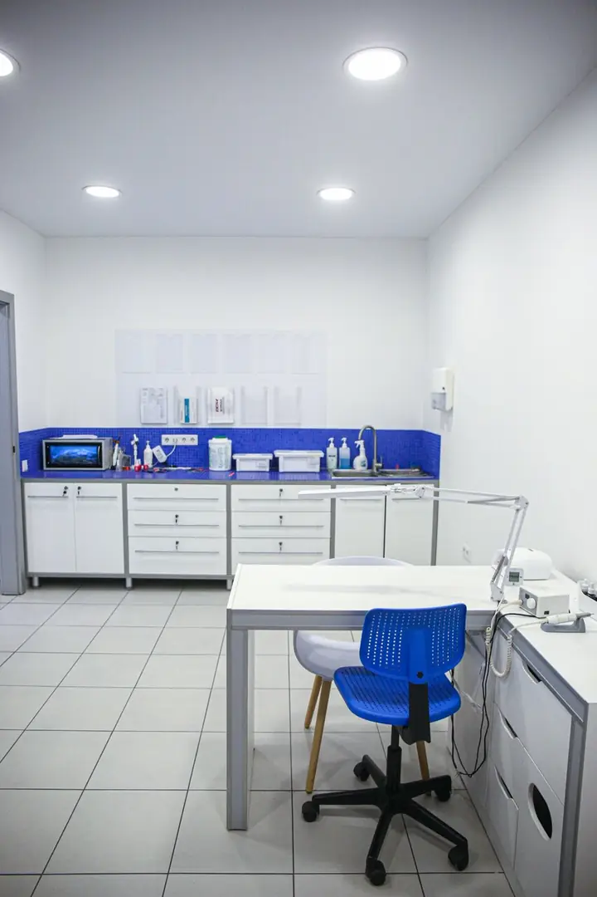
Услуги
Что делают в студии
-
Маникюр и покрытие
Аппаратный и пилочный маникюр, покрытие гель-лаком, укрепление и моделирование ногтей, френч и дизайн. Есть мужской ногтевой сервис.
-
Забота о ногтях
Укрепление натуральных ногтей, в том числе IBX System, уход за кутикулой и уход после снятия гель-лака.
-
Уход для рук
Уход за кожей рук и расслабляющий массаж до локтя: приятное завершение процедуры.
Актуальные цены и свободное время в записи.
ЗаписатьсяГалерея
Студия и работы
Интерьер
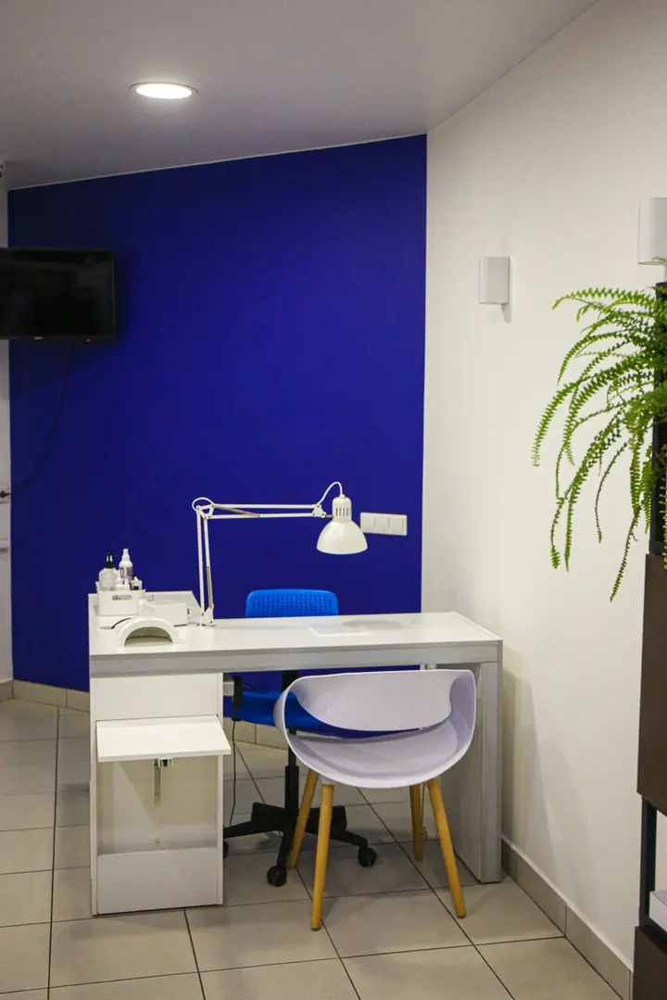
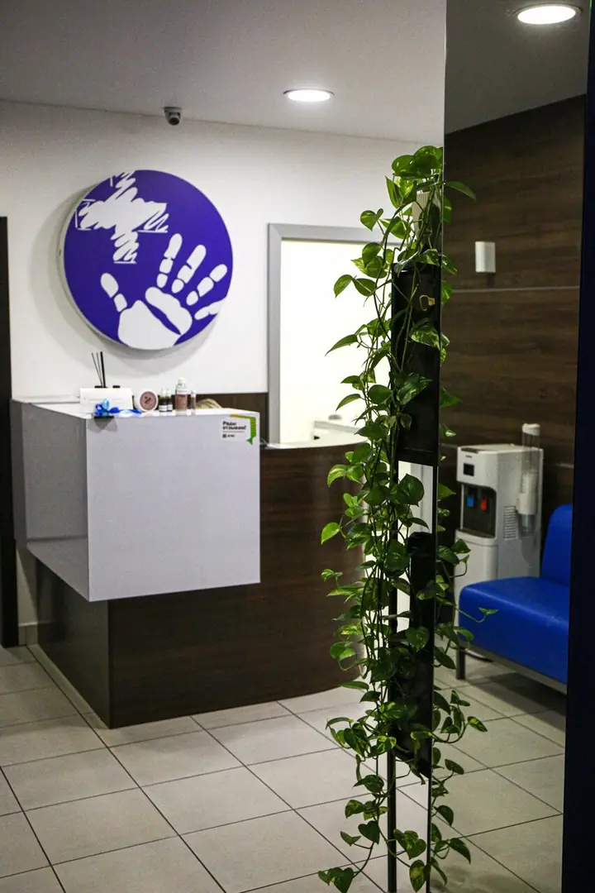
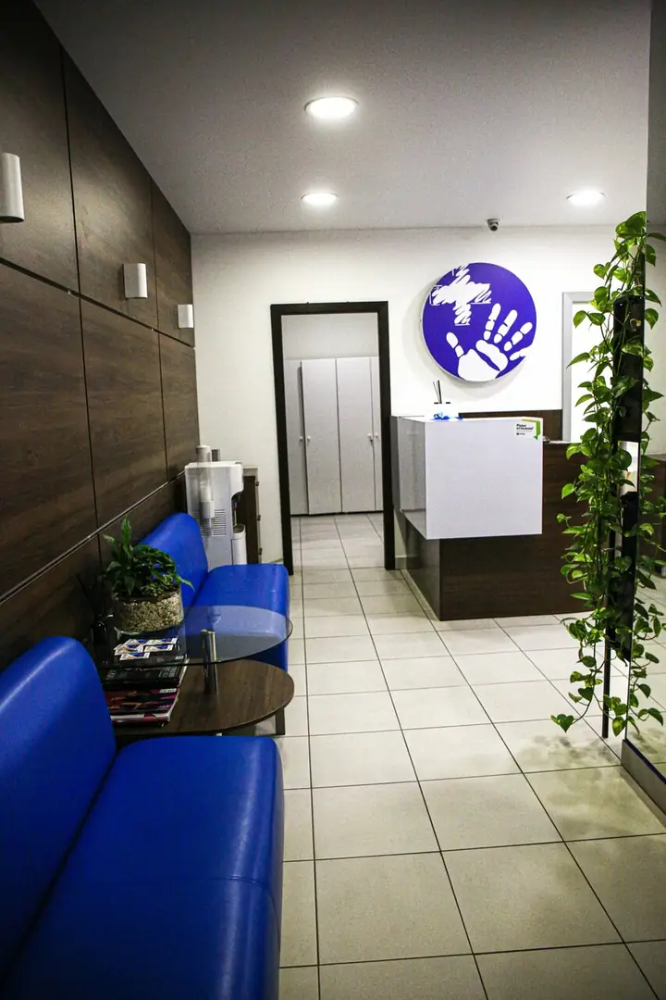
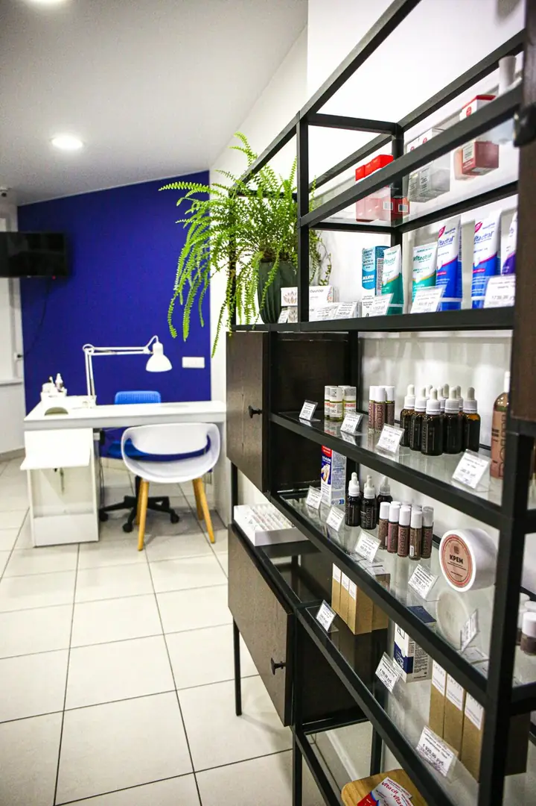
Работы
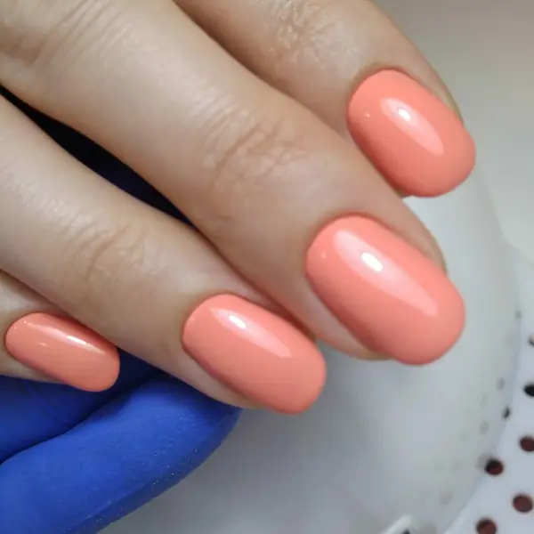
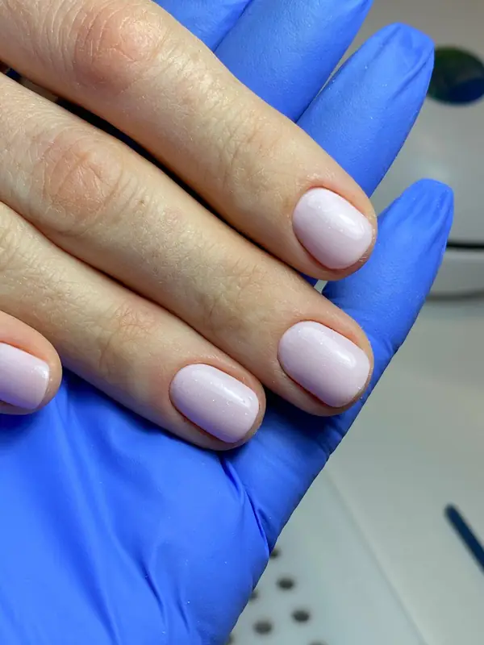
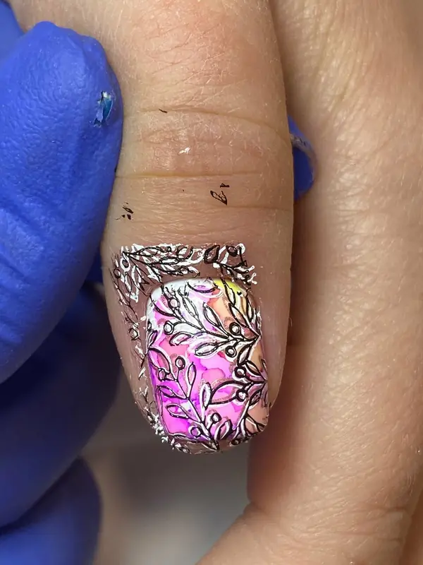
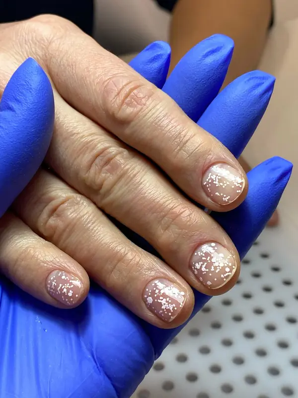
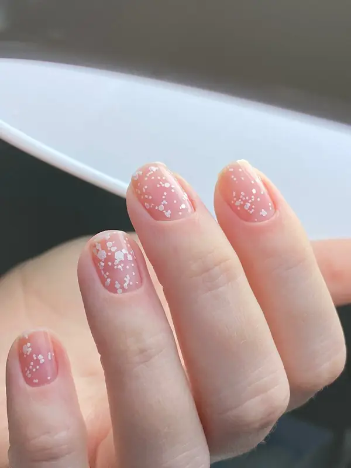
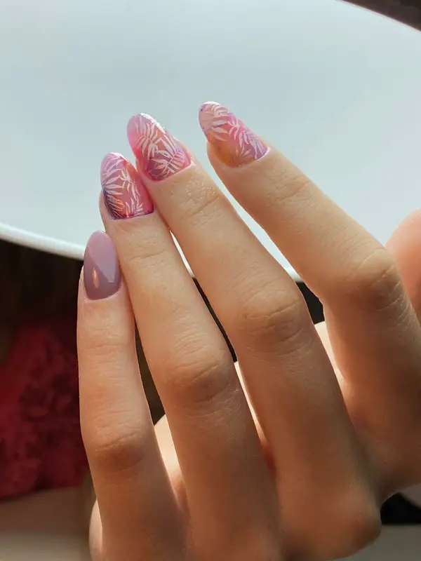
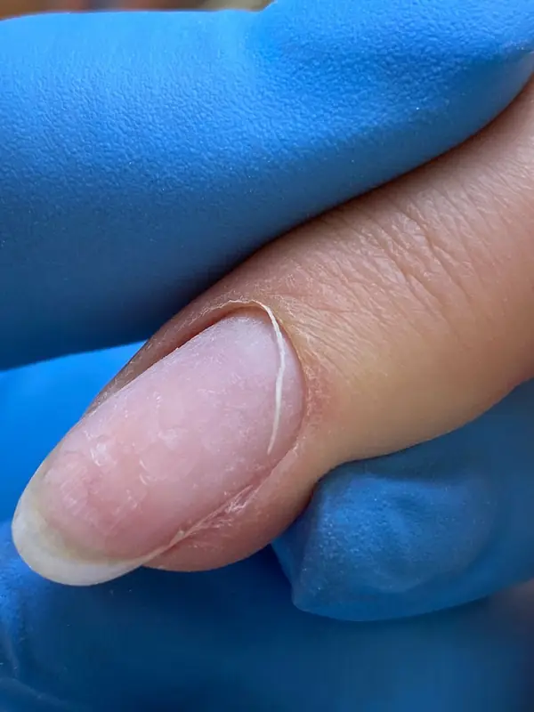
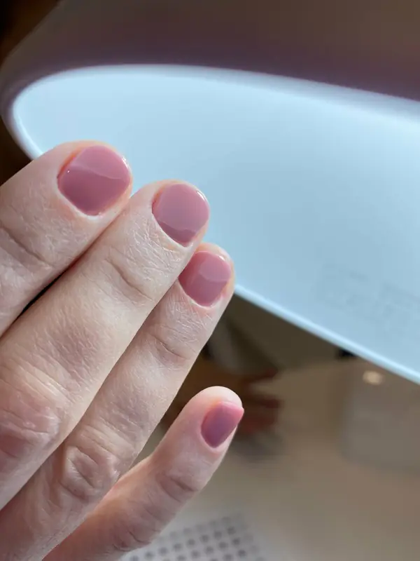
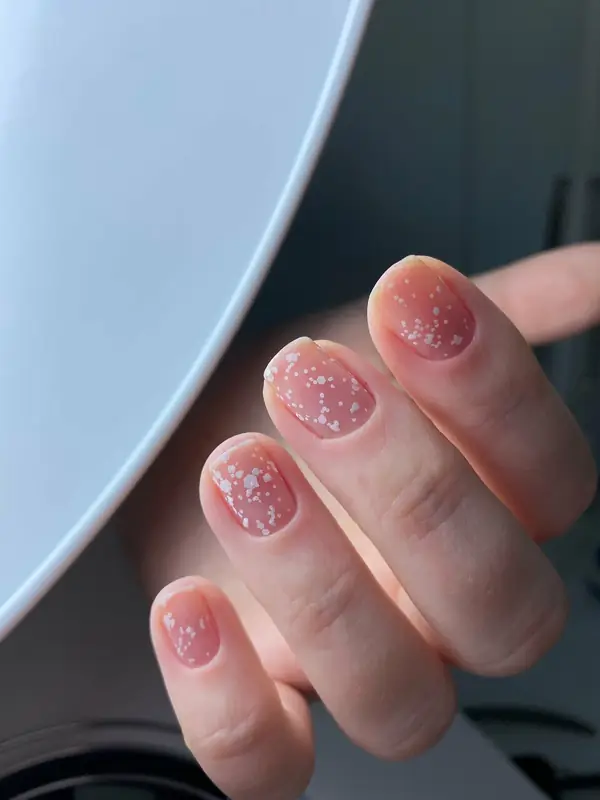
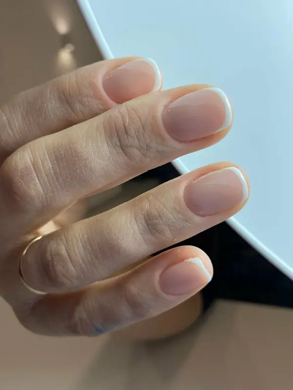
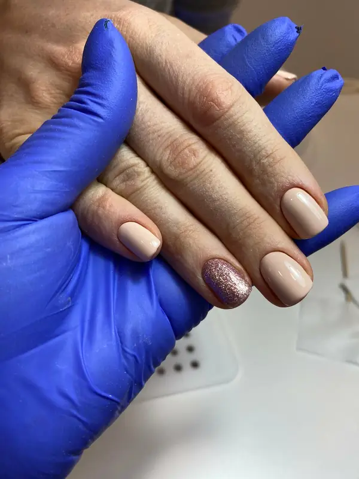
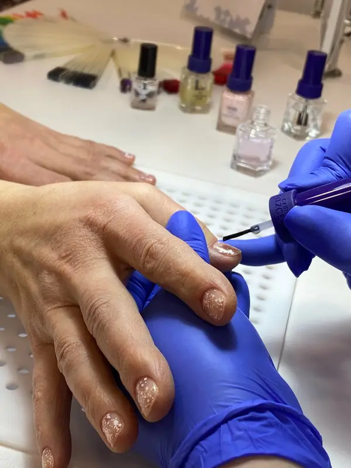
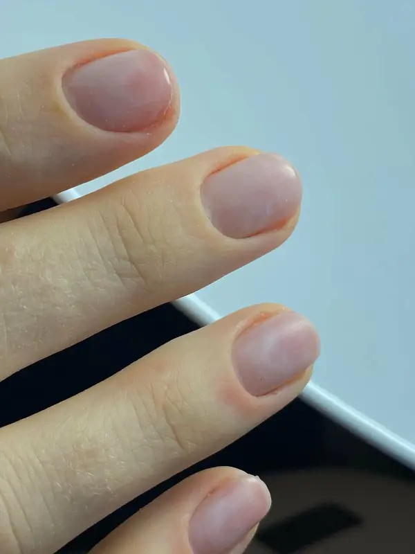
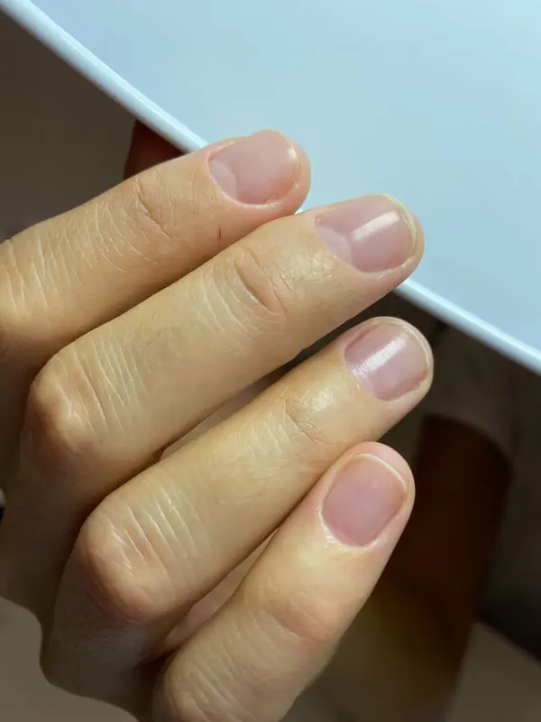
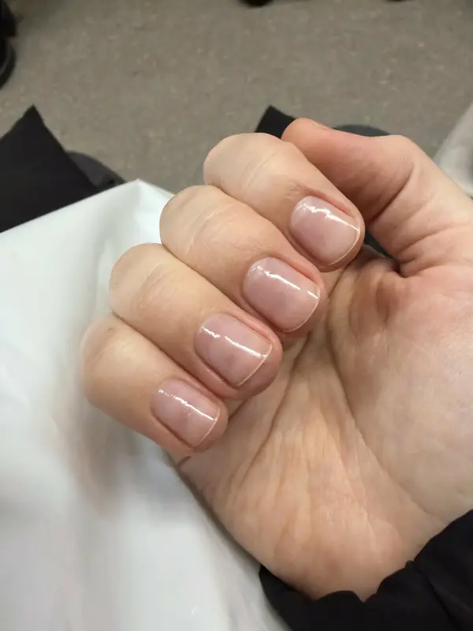
Контакты
Как добраться
- Адрес
- Новосибирск, Ядринцевская ул., 18, этаж 1
- Метро
- м. Площадь Ленина, 360 м
- Часы работы
- Открыто до 21:00
- Телефон
- +7 (383) 209-04-80
Ядринцевская ул., 18 · этаж 1